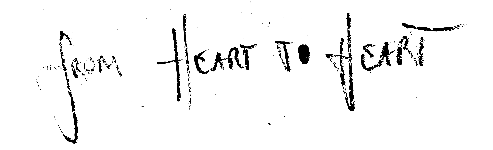

Welcome to Superabundance Mineral Balancing
Emanuel Elischa – Mineral Balancing & Roots Cause Practitioner, Vitalist Clinician
Hi! My name is Emanuel Elischa & I am a holistic health practitioner who reframes wellbeing as a participatory & dynamic relationship rather than a fixed state or diagnosis. Specializing in mineral balance and metabolic function, as well as with a background in botanical medicine and student of consciously assisted evolution, I'm guiding individuals to reclaim inner authority over their vitality.
Through the focus on Energy as the fundamental fabric & currency of life — driving physical function & performance, emotional intelligence, as well as spiritual & creative self actualization, I am helping people translate symptoms into signals, assumptions into insight, and transform energy deficits into adaptive capacity.
My approach combines scientific understanding & analysis with personal empowerment, emphasizing that true healing arises from active engagement with the body’s innate intelligence rather than passive adherence to external authority.



Here is what you can expect by nourishing your MINERAL BALANCE & working with me:
- ★sustained energy throughout the day without relying on stimulants
- ★more stable emotions and an overall uplifted mood
- ★greater access to creative flow states and mental clarity
- ★more restful, deeper, and higher-quality sleep
- ★a more resilient and well-regulated immune system
- ★improved hormonal health and increased libido
- ★easier fat reduction alongside more efficient muscle growth
- ★improved gut health and stronger digestive function
- ★enhanced memory, sharper senses, and better focus
- ★support for removing heavy metals and environmental toxins
- ★increased strength & energetic capacity
- ★healthier relationships and an overall better quality of life